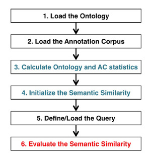

FastSemSim Command Line Interface (CLI)¶
The FastSemSim package includes a command line Interface to load ontologies and annotation corpora, and evaluate semantic similarity, without requiring any programming effort.
This section explains how to start and use FastSemSim from the command line.
Running the Command Line Interface¶
FastSemSim installations takes care to create the executable of the command line Interface. To run it, just type fastsemsim in a console.
Run fastsemsim -h to visualize the full set of parameters.
CLI capabilities and standard workflow¶
The CLI main function is designed to evaluate semantic similarity scores.
It currently allows to load an arbitrary obo ontology and annotation corpus. If no custom ontology is provided, the embedded version will be used.
The standard processing workflow performed by the CLI to evaluate the semantic similarity scores can be recapitulated in the following 6 steps
Examples of semantic similarity calculation with the CLI¶
This section provides several CLI use cases. You may take them as exampels and modify the parameters to fit your objectives.
More examples of CLI usage are included in the file fastsemsim/examples/example_cmdline.sh
Exampe 1. Evaluate the Resnik BMA semantic similarity over the Gene Ontology between all the pairs of human proteins annotated in the Uniprot GOA:¶
fastsemsim --ontology_type GeneOntology --query_ss_type obj --tss Resnik --mix BMA --query_input ac --ac_species human -vv
Parameter description:
--ontology_type GeneOntology: instructs fastSemSim to load the embedded version of the GeneOntology
--ac_species human: instructs fastSemSim to load the embedded version of the Uniprot human gene ontology annotation corpus
--tss Resnik: selects the term semantic similarity to use
--mix BMA: selects the mixing strategy to use (required by pairwise semantic similarity measures, e.g. Resnik)
--query_ss_type obj: tells fastSemSim that the query will be a list of objects annotated with the ontology terms
--query_input ac: tells fastSemSim to use all the objects in the annotation corpus as query
-vv: the verbosity level
Exampe 2. Evaluate the SimGIC semantic similarity over the Disease Ontology between all the pairs of ontology terms, using the human DOA (Disease Ontology Annotation) dataset for establishing the Information Content statistics:¶
fastsemsim --ontology_type DiseaseOntology --query_ss_type term --tss SimGIC --query_input ontology --ac_species human -vv
Parameter description:
--ontology_type DiseaseOntology: instructs fastSemSim to load the embedded version of the DiseaseOntology
--ac_species human: instructs fastSemSim to load the embedded version of the human Disease Ontology Annotation corpus
--tss SimGIC: selects the term semantic similarity to use (as SimGIC is a pairwise semantic similarity, the –mix parameter is not required )
--query_ss_type term: tells fastSemSim that the query will be a list of ontology terms
--query_input ontology: tells fastSemSim to use all the terms in the ontology as query. Use --query_input ac to use all the ontology terms associated to at least one object in the annotation corpus as query.
-vv: the verbosity level
Exampe 3. Evaluate the SimGIC semantic similarity over the Gene Ontology (loaded from file GO_FILE) and the Uniprot human gene ontology annotation corpus.¶
The query is a list of sets of objects loaded from the QUERY_FILE file. See this file for an example of a valid objset query file. The output will be written in the OUTPUT_FILE file. See this file for an example of the output generated.
fastsemsim --ontology_type GeneOntology --ontology_file GO_FILE --ac_species human --query_ss_type objset --tss SimGIC --query_input file --query_file QUERY_FILE -vv --output_file OUTPUT_FILE --query_mode list
--ontology_file GO_FILE: the file with the ontology to load
--ontology_type GeneOntology: instructs fastSemSim about the type of ontology that will be loaded
--ac_species human: instructs fastSemSim to load the embedded version of the human Disease Ontology Annotation corpus
--tss SimGIC: selects the term semantic similarity to use
--query_ss_type objset: tells fastSemSim that the query will be a list of sets of objects.
--query_input file: tells fastSemSim to load the query from file. Requires the parameter –query_file to be specified.
--query_file QUERY_FILE: the name of the query file
--query_mode list: tells fastSemSim that the query is a list of elements. The pairwise semantic similarity between each element will be evaluated.
--output_file OUTPUT_FILE: the output file where the scores will be stored.
Troubleshooting¶
If you want to run fastSemSim Command Line Interface without installing the FastSemSim library, you can run the Python script fastsemsim_cmdline.py located in the folder fastsemsim.
You should include the FastSemSim library in your PYTHONPATH before running the script, by running export PYTHONPATH=path-to-fastsemsim-folder.